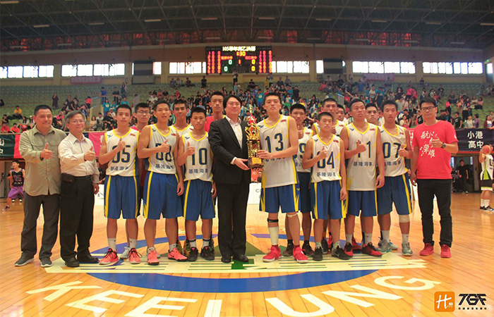

貼文時間：2017/07/19

位於台灣最北端，孕育出國手林志傑、李啟億等人，曾於84學年度勇奪乙級全國冠軍，如同連綿細雨的基隆，經歷好一段換血、重建期，洋洋水手無懼風雨，他們是基隆海事，連續兩年重返全國八強，更為105學年度北區複賽第一名…
教練楊能顯出身於甲級名校-新榮高中，95學年度在恩師田本玉的帶領下，與國手張宗憲一同拿下全國亞軍，隨後就讀彰化師範大學，大學時期和兵役時期皆有帶隊經驗，對於接掌基海教練一職，楊教練說到：「原先不打算再接觸教練這個職務，回到基隆海事教書，恰逢這幾屆球員有企圖心，加上原先的教練想引退，誤打誤撞下又回到這熟悉的領域。」
訓練上，楊教練說到：「基隆這個城市是塊寶地，學校周圍有山海環繞，海岸處的沙灘可以加強足部抓地力，加上學校所提供的資源如：泳池…擁有這樣的環境，使得訓練上得以更加多元化，不是一昧地待在體育館重複著相同內容，也有助舒緩球員訓練時身心的疲憊。」
基隆海事球風剽悍，防守壓迫包夾是比賽中常見的戰略，進攻上，教練不設限戰術，交由進攻發動機邱佳豪指揮；畢業於國中乙級名校-正濱國中的邱佳豪，原先選擇就讀甲級基隆商工，後來輾轉回到基海，開啟了他乙級籃球路。
楊教練特別稱讚這名球員：「一個球隊最重要的是後衛，一個後衛最重要的是靈魂，靈魂來自於球場上的靈性，大多是與生俱來的，可以從一個簡單的PLAY看出，而佳豪就給了我這種感覺。」
基隆海事連續兩年闖進全國八強，楊教練表示：「相較於第一年，今年的團隊上下更為凝聚，得以拿下隊史第一次北區複賽冠軍，但也因為第一種子的壓力，今年全國賽，前幾場的表現明顯緊繃，球員不知如何釋放壓力，是一大原因。明年度的主要透過各類比賽，來增加球員的抗壓性，特別是與甲級球隊的交流（越級打怪）來做調整。
在今年的表現上，楊教練也提到主力中鋒包緯杰的好表現，高中才接觸起籃球的包緯杰，是這三年來成長最多的一位，他與邱佳豪等人的「兄弟情」實為佳話。也因為有全國賽的好表現，得以獲得明道大學的保送權，在沒有升學保送權的乙級是非常難得且令人雀躍的。
楊教練表示：「帶隊短短幾年下來，最大的收穫是跟著這群球員成長，一起拿下比賽的勝利，過去所受田本玉老師的提拔，如今能夠回饋給台灣籃球這個環境，除了感謝更是珍惜，未來也期許能深耕在乙級籃球，實踐教育與體育並行的美德，也謝謝外界資源的投入，有心人士提供的舞台，讓乙級籃球得以展現生命力。
水手無懼，航向未來，過往的光輝歲月石沉大海，如今專注於眼前的目標，揚起風帆，準備重返榮耀，這群來自基隆海事的水手們無所畏懼，明年度目標衝擊全國冠軍！